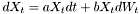
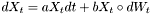
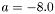
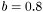
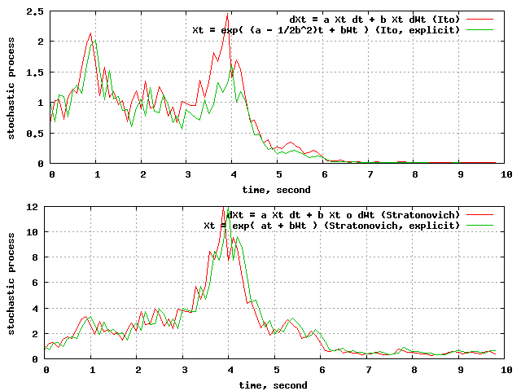
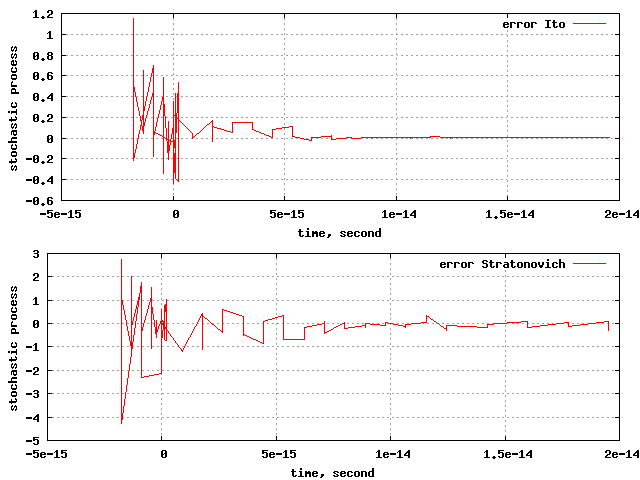
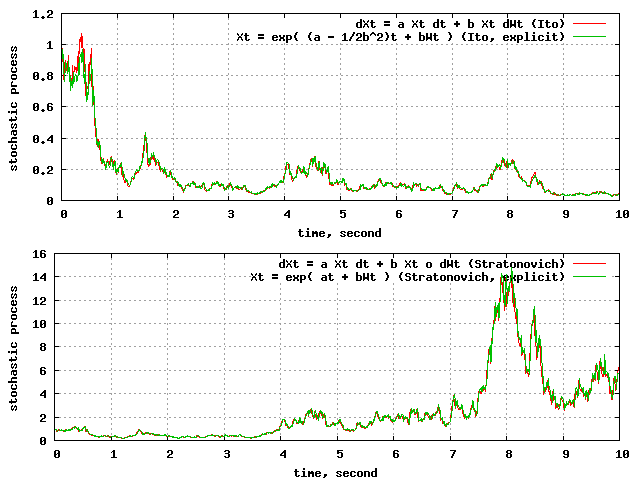
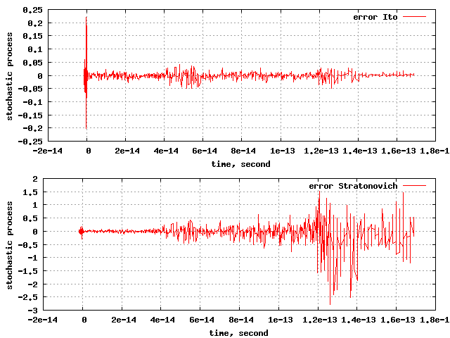
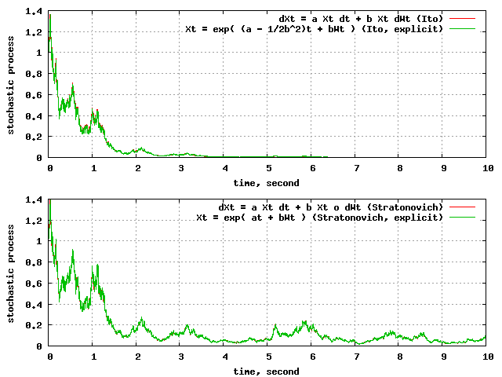
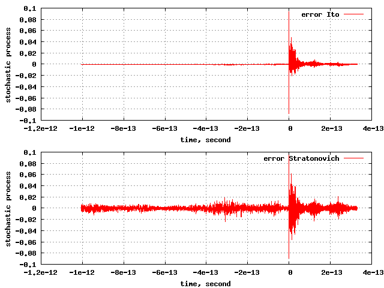

NeuroLab Documentation
NeuroLab is a class library which offers simulation of stochastic differential (integral) equations, as well as recording and display of data. Its main use is intended to be in the neuroscience field.
Stochastic Variables (
StochVariable), such as stochastic differential equations (
Differentiable), produce data. This data can be recorded (
Matrix) by various estimators, which look for mean, variance and/or higher moments. Using a display (
Display) the data can then be displayed, compared to analytical functions (
Function), and saved as data (gnuplot format), or postscript file, ready to be included in your paper.
Stochastic differential equations can be interpreted in the Ito or in the Stratonovich sense. The Differentiable class lets you switch between these two versions, even at runtime.
Data can be recorded conditionally. This means the mean (or any other moment) of a process as function of the time distance to an observed event can be taken. This is done by a ConditionalEstimator, which records the time course of a stochastic variable (StochVariable) before and after an observed event (Event).
A leaky integrate-and-fire neuron is implemented (
IfNeuron), which can be calibrated automatically to give a certain response rate (
IfNeuron::calibrate()). A neuron is also a SDE, so you may set up small neural networks, having a system of inter-dependent SDEs, where mutual dependencies are allowed as well. Since a neuron produces events (spikes), you can also do spike-triggered averaging.
A neuron may receive its stimulus via three different ways:
An independent stochastic process. These are objects of the classes Poisson, Wiener, WienerCpp. They can be linked to a neuron with the IfNeuron::addStimulus() method. Each such object may drive one or many neurons.
A dependent stochastic process. A Noises object produces NoiseSource objects which resemble poisson and wiener processes, and which may be correlated. It is even possible to correlate a wiener and a poisson process.
Another neuron. In this case a synapse has to be built, which connects the neurons. Possible classes are Synapse (a simple synapse which transforms the spike events of the pre-synaptic neuron into Zeros and Ones [multiplied by a weight factor]), or ComplexSynapse (a more complex synapse, which is driven by a differential equation).
For a short quality check the equations

(Ito) and

(Stratonovich) with  and  are simulated using the Differentiable class. This equation has an explicit solution, which was used to calculate the error (which is just the difference simulation - explicit solution in the following displays).
Step size = 0.1:

Above: Ito and Stratonovich equations plotted on top of their explicit solutions at a time step of 0.1ms.

Above: the error of the Ito and Stratonovich equations at a time step of 0.1ms.
Step-size=0.01:

Above: Ito and Stratonovich equations plotted on top of their explicit solutions at a time step of 0.01ms.

Above: the error of the Ito and Stratonovich equations at a time step of 0.01ms.
Step-size=0.001:

Above: Ito and Stratonovich equations plotted on top of their explicit solutions at a time step of 0.001ms.

Above: the error of the Ito and Stratonovich equations at a time step of 0.001ms.